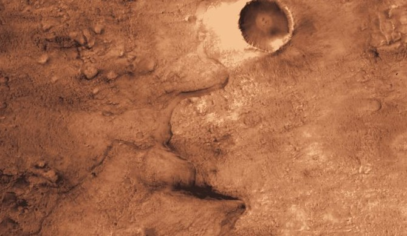
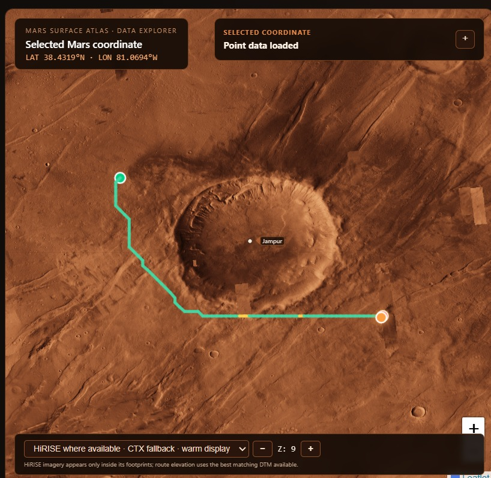

Choose your region
- Gale
- Gusev
- Jezero
- Elysium
- Olympus Mons
- +2,047 more
01The planet
MarsWalk reads the same orbital products mission planners use — MOLA and CTX stereo elevation, USGS geologic mapping, TES surface properties — and brings them onto one surface you can measure, route across and stand on.
02Scale
Start at the whole globe, narrow to a landing site, then to the ground under a single footstep. Every named place on Mars is searchable from the first click.
Choose your region
Perseverance delta front · CTX stereo terrain

03Routing
An A* search over slope, height change, roughness and terrain semantics, with cross-slope penalties applied and impassable cells removed before a single step is drawn.
Terrain risk
Slope, local relief and RMS roughness from a plane fit, classed safe, caution, high or impassable.
Three priorities
Safest, balanced and fastest are planned side by side so you pick the compromise instead of accepting one answer.

Captured from the planner at Jampur crater. Route cost settings are terrain-planning proxies, not rover-certified limits.
Dataset confidence
HiRISE and CTX stereo DTMs where they exist, a global 1 km grid everywhere else — and the panel names which one you got.
Mission efficiency
Distance, drive hours, sols and energy are checked against the budget you enter, never against invented rover specs.
04Surface
WALKED 1,284 m · ELEV −2,412 m
The CTX stereo terrain becomes a mesh you can walk. Head tracking turns an ordinary phone into a viewer for it.
A 40.6 × 93.2 km Jezero mesh from ~20 m posting stereo terrain, with DTM gaps left as gaps instead of guessed.
Split-screen rendering driven by device orientation, with recentre and a fullscreen headset mode.
Slope, local relief, mapped geologic unit and solar geometry for any coordinate you select.
Draw hazard polygons over CTX imagery and save them as GeoJSON for later review.
05Mission
Three steps from a point on the globe to a traverse checked against your own constraints — and a report you can take away.
Pick start and end on the 3D globe, the 2D map, or from the searchable place catalog.
Slope limit, average speed, drive hours per sol, energy budget and reserve — plus crew size and oxygen for crewed profiles.
Three routes, each tested against your limits, with every exceeded constraint named in plain language.
| Priority | Distance | Sols* | Energy* | Max slope |
|---|---|---|---|---|
| Safest | 3.02 km | 5.0 | 3.0 kWh | 11.4° |
| Balanced | 2.41 km | 4.0 | 2.4 kWh | 14.2° |
| Fastest | 2.18 km | 3.6 | 2.2 kWh | 19.6° |
* Schedule and energy are calculated from the assumptions you enter. They are not rover performance predictions.
Open the mission plannerIt is a world of places, histories, and possibilities — waiting for the next explorers to take the first step.
Explore surface